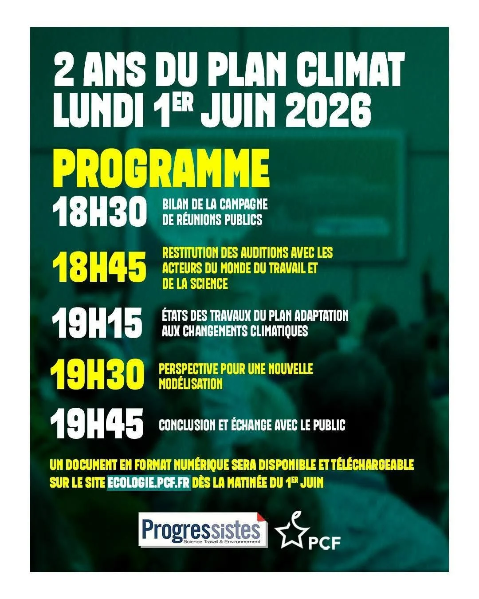
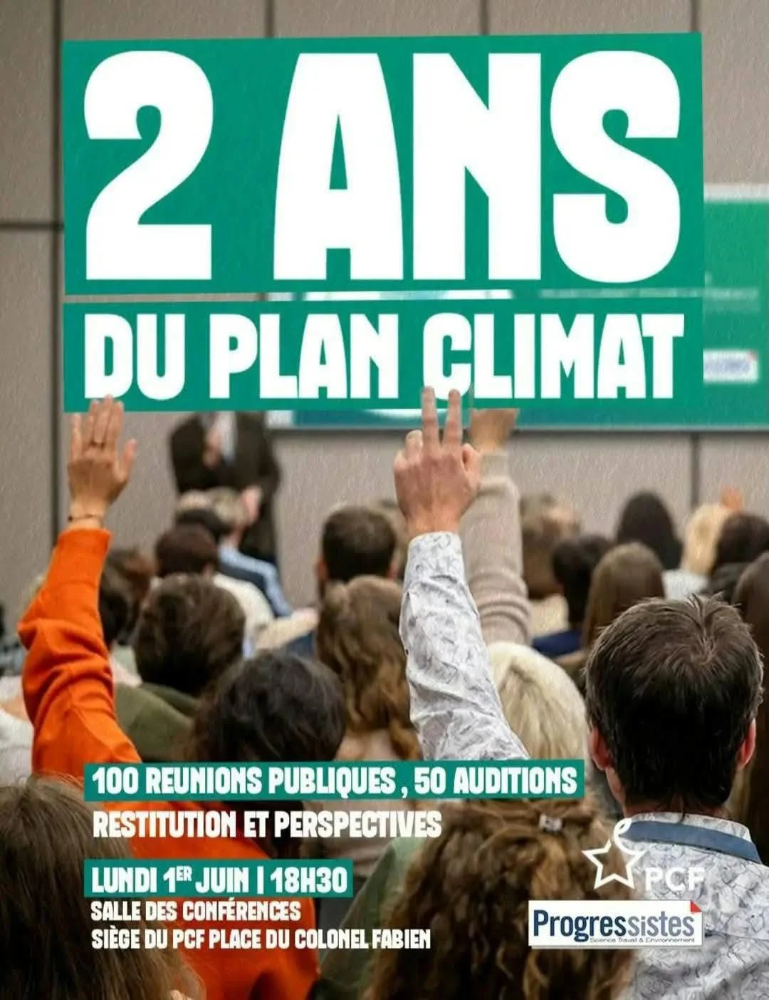

Annonce relayée
Empreinte 2050, deux ans de travail sur le plan climat
Date de mise à jour indiquée par Facebook · 1 juin 2026
Repères éditoriaux
La revue Progressistes et le PCF ont donné rendez-vous le lundi 1er juin 2026 à 18 h 30 pour une restitution des débats sur le plan climat Empreinte 2050. Le programme annonce un bilan, des échanges et la présentation de nouvelles orientations.
Texte de la publication · Amar Bellal
Plan climat Empreinte 2050 : point d’étape
https://revue-progressistes.org/2026/05/25/evenement-restitution-des-debats-sur-le-plan-climat-empreinte2050/


Sources
Amar Bellal · publication relayée par le PCF 79 · bibliothèque Facebook · AR-0002-FB-00763
À lire aussi · Quelle politique énergétique pour la paix et une transition juste ?